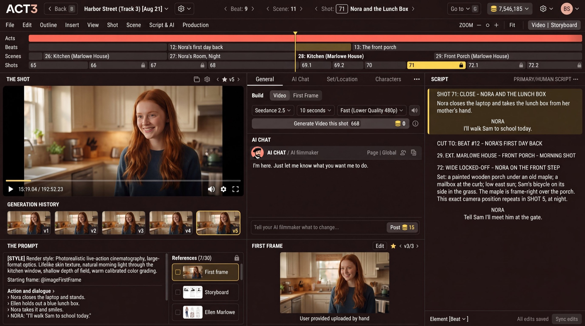

Step 4 of 6
Change the script with the AI chat
Something in the shot is wrong, or the story needs a change. Tell your AI filmmaker in plain words and click Post. Watch the script pane flash as it updates, then build again.

What the AI chat is
The AI CHAT in the middle column is your AI filmmaker: a collaborator who knows your whole script, every shot and every take. Type in Tell your AI filmmaker what to change... and click Post (or press Enter).
What you can ask for
- A line of dialogue: "Make Nora's line shorter and warmer."
- A set: "Change the set to a Maui beach. She's carrying a surfboard."
- An actor's action: "She takes the lunch box with her left hand, then smiles."
- The camera: "Make this a slow push-in instead of a locked-off close-up."
The AI answers in the chat, and the SCRIPT pane on the right flashes as the change lands, so you can read the new version at once. Being specific pays off: name the shot, the character and what should be different.
Your decision: one shot, or the whole story
A change to one shot's look (light, framing, wardrobe) stays in that shot. A change to the story (a new line, a new location) can touch several shots and scenes; read the script pane before you build them all again.
Why you build again next
Changing the script does not spend credits on video. When the script and first frame read right, go back to the Build controls (step 2) and build the take. Builds run in the background, which is the next step.